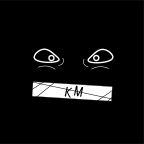
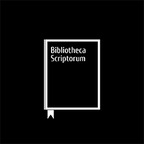
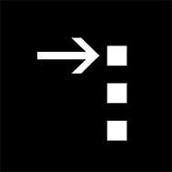

Проект "Компас" - первая в мире площадка для систематизации, анализа и работы с новостями.
Проект, на данный момент, находится на стадии разработки.
Не вдаваясь в подробности, “Компас” будет собирать данные по всем новостным порталам, сопоставлять факты с написанным в новостях от СМИ и выводить вердикт. Первостепенная цель: помочь пользователю ориентироваться в новостях и событиях, знать какие СМИ надежны, а какие - нет.
На данный момент есть исследовательская группа, группа разработки, а так же публичная страница, в которой рассказывается о работе, разбираются кейсы.
www.project-kompas.cf
“Перо Афины” - бот, который помогает пополнить словарный запас, разбираться в терминах, скрасить речь, даёт возможность легче читать литературу по изученным категориям.
В бот регулярно добавляются новые словари, задания по категориям.
На данный момент, “Перо Афины” реализовано в Telegram и Яндекс.Алиса.
@peroafiny_bot

Канал “Культурный моветон” посвящен статьям по инфосреде и перспективе, отзывам о книгах и выставках, различные подборкам и многому другому, что нужно человеку для своего культурного и умственного развития; совершенствованию своих навыков.
@cultmoveton

“Библиотека писателей” - бот, который рекомендует книги, основывая на рекомендациях писателей и видных деятелей. Все списки составлены по письмам писателей, воспоминаниям современников и мемуарам. Количество списков регулярно увеличивается.
Доступно в Telegram и Яндекс.Алиса
@bibliopisatel_bot

Netstalking Ultimate Links Spreading Bot (NULS Bot) - бот, сделанный для удобства изучения и вхождения в такой культурный феномен, как Нетсталкинг. В нем содержится исчерпывающее количество актуальной информации о нынешней деятельности, инструментарии нетсталкеров, а так же результатах их работы.
@netstalking_links_bot
По вопросам вступления в наши ряды, прошу писать в Telegram @M0VE21.
Если вы хотите помочь нам материально, также пишите @M0VE21.